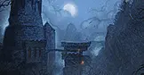
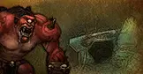
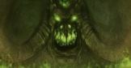

Prepare to tread once again through the Dark Portal and into the fel-scarred realm of Outland! Champions level 60 or higher, unite against the Burning Legion and rally together to confront the formidable forces that threaten Azeroth from the other side.
Adventure across the shattered skies and torn lands of Outland, an exiled world fraught with peril and mystery, as you strive to protect Azeroth from destruction. The Burning Legion's influence runs deep — only the bravest will push them back.
From Hellfire Peninsula to Nagrand's crystalline plains, every zone offers new quests, dungeons, and reputation grinds that power your raid roster.
The decrepit tower of Karazhan once housed one of the greatest powers Azeroth has ever known: the sorcerer Medivh. Since his death, a terrible curse has pervaded the tower and the surrounding lands. The spirits of nobles from nearby Darkshire reportedly walk its halls, suffering a fate worse than death for their curiosity.
More dangerous spirits wait within Medivh's study, for it was there that he summoned demonic entities to do his bidding. However, the brave and foolish are still relentlessly drawn to Karazhan, tempted by rumors of unspeakable secrets and powerful treasures.

Gruul the Dragonkiller is worshipped as a deity by the ogres of Blade's Edge Mountains. His powerful sons ravage both the spires of their home and the plains of Nagrand. Gruul's unparalleled strength and experience in battle would pose a serious threat if he ever chose to attack Horde or Alliance forces in Outland.

Magtheridon, former lord of Outland, has been imprisoned in the citadel by Illidan Stormrage and now looks to reclaim Outland as his own. Gather fellow defenders to bring him down, once and for all.

Heroes who choose to cross the Dark Portal — it is up to you to fight for this shattered world to rid it of evil, or watch its demonic denizens consume everything held dear.
Welcome to Outland. The crusade begins.